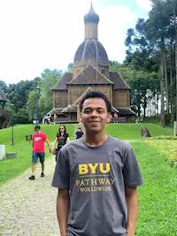

Willian Ramos Silva | WDD 130
Hello, my name is Willian Ramos, and I’m from Minas Gerais, Brazil. I’m super excited about this journey into the world of programming. I’m 22 years old and really enjoy hiking in the beautiful areas near where I live. I also love açaí and dark chocolate. I’m always eager to learn and push myself to achieve my goals. I often say that our greatest enemy is ourselves. Studying at a university where everyone speaks fluent English is challenging for me, but I have the support of my friends and family. I’m passionate about learning new cultures and aim to work in financial database security in the future. The web development course I’m currently taking has been a great help in introducing me to the programming world.